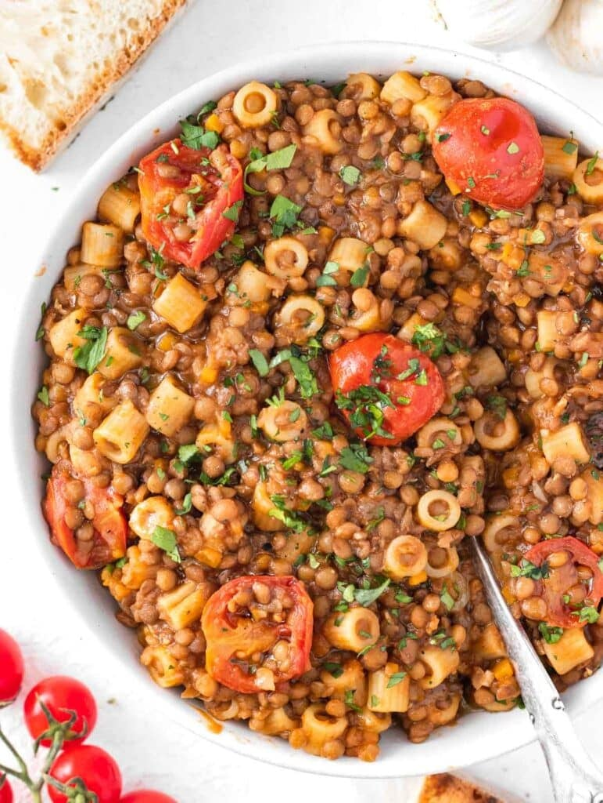

Lentil Pasta

Description:
This is absolutely my favourite winter dish. I love it, I'd eat this 7/7 all season long.
Pasta, lentis, cherry-tomatoes, all warm and creamy. And on top of it, garlic
Ingredients:
- Lenticchie - 50g
- Aglio - to tastte
- cherry-tomatoes - 6 or 8 of them
- Pasta - 100g
Steps:
- Oil the pan with two tablespoon, add chopped garlic and let it fry for a bit
- Add cherry-tomatoes quartered
- After about 60 seconds add the lentils along with a glass of water (or two it the glass is small)
- Keep it on the heat for about 25 minutes, adding water little-by-little as it cooks
- In the end, add the pasta, with another glass of water and let it cook according to its time
- No need to drain, your dish is ready. Take a full bowl and let the love blossom in you.
Home